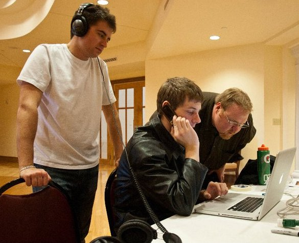

About Me
Joseph Perkins is a Senior Application Support Specialist at Northwestern University that is looking to expand his web development knowledgbase so as to better assist the teams which he assists on a day to day basis. He is not actively looking to switch careers, but he is not apposed to the idea, should a prospect come along.
He received his undergraduate degree back in 2013, and his focus was Audio Engineering. While he isn't currently in a career path that utilizes a majority of these skills, he has made several tangental moves in the tech and IT industry, moving from computer repair (hardware and software) to IT support for mutliple library branch, general data analysis, and now, senior level application support.
If you would like to contact him with questions or feedback, you can reach him via the contact tab at the top-right corner of this page.